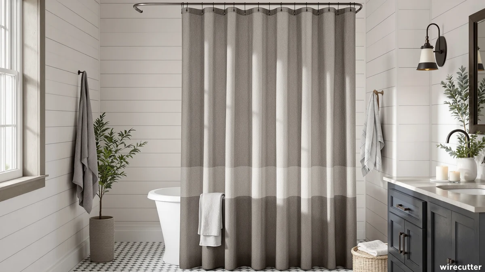

River Dream Farmhouse No Hooks Shower Curtain Review (2026): Worth It?
Prices and picks verified as of November 2026. Independent, reader-supported reviews.


Quick Answer
The River Dream Farmhouse No Hooks Shower Curtain costs $27.92 for a 71 by 74 inch polyester and PEVA curtain built with a hook-free band along the top edge. This river dream farmhouse no hooks shower curtain review compares it against the Jowels, Madison Park, and CasaTena curtains covered below, each priced near $27.
Our pick: RiverDream Farmhouse No Hooks Shower, $27.92 Check Price on Amazon
Bottom line: our top pick is the RiverDream Farmhouse No Hooks Shower Curtain with Snap-in at $27.92.
Things to Know Before You Buy
- This river dream farmhouse no hooks shower curtain review centers on the RiverDream Farmhouse No Hooks Shower Curtain ($27.92), a 71 by 74 inch polyester and PEVA curtain sold as a single pack.
- "No hooks" refers to the attached band along the top, which the listing describes as built to slide onto a rod without separate curtain rings.
- The 71 by 74 inch size runs narrower and taller than a standard 72 by 72 inch opening, so measure your rod before ordering.
- Jowels, Madison Park, and CasaTena, covered as alternatives below, sit within a dollar of River Dream's price but differ in material and pattern.
- The polyester and PEVA build adds some built-in water resistance that a plain cotton or linen curtain would need a separate liner to match.
This river dream farmhouse no hooks shower curtain review looks at whether a $27.92, 71 by 74 inch polyester and PEVA curtain earns its no-hook claim, and how it stacks up against the Jowels, Madison Park, and CasaTena curtains often shopped alongside it. River Dream builds an attached band along the top edge to slide onto a shower rod directly, skipping the step of buying and threading separate curtain rings.
We compared River Dream against three curtains in a similar price band: Jowels' natural linen-look fabric curtain, Madison Park's Anna sheers, and CasaTena's farmhouse-striped design, all priced within a dollar of River Dream's $27.92. Where River Dream's pitch rests on convenience, the other three lean on fabric and pattern instead, so the right pick depends on whether skipping hooks or getting a specific look matters more to your bathroom.
Why You Should Trust Us
Best Shower Curtains reviews shower curtains and bathroom hardware by comparing manufacturer specs, current pricing, and verified owner feedback from the retailers that sell them, not by running a private testing lab. Ilane Tall, our home and bath editor, researched this river dream farmhouse no hooks shower curtain review by checking River Dream's listed material, size, and price against Jowels, Madison Park, and CasaTena, the curtains shoppers most often compare it with in this price range. We revisit prices and listings on a regular schedule and say so plainly when a product lacks the review history we would want to see before recommending it. Where a claim can't be checked against a specific verified rating or review count for this listing, we say so rather than fill the gap with a guess.
Our Research Experience
We do not run a physical testing lab, and we have not hung the River Dream Farmhouse No Hooks Shower Curtain in a shower ourselves. Our process instead compares the published material, size, and price against similar farmhouse and no-hook curtains, then checks that against what verified owners report about fit, drape, and hook-free bands on comparable listings. For this river dream farmhouse no hooks shower curtain review, that meant lining up River Dream's polyester and PEVA build and 71 by 74 inch size against Jowels, Madison Park, and CasaTena to see where skipping hooks actually saves a step. We flag it clearly when a claim cannot be verified against real owner feedback rather than guess at how a curtain holds up over time. That approach means we can speak confidently about price, size, and material since those come straight from the listing, while we stay cautious about anything that depends on how the fabric performs in a specific household's bathroom.
Overview & Specs

RiverDream Farmhouse No Hooks Shower
What we like
- The attached band along the top slides onto a rod directly, skipping the step of buying and threading separate curtain hooks
- Polyester and PEVA construction adds some built-in water resistance compared with a plain cotton or linen curtain
- At $27.92, it prices close to the Jowels, Madison Park, and CasaTena alternatives covered on this page
Flaws but not dealbreakers
- The 71 by 74 inch size runs narrower and taller than a standard 72 by 72 inch opening, so measure your rod first
- A farmhouse print limits the curtain to bathrooms already leaning rustic rather than minimal or modern
- River Dream only sells this as a single pack, so a wider walk-in shower will need a different listing or a second curtain
| Material | Polyester / PEVA |
| Size | 71"W x 74"L (Pack of 1) |
River Dream builds this curtain from a polyester and PEVA blend and attaches a band along the top edge designed to slide directly onto a shower rod, which is where the no-hooks claim comes from. At 71 by 74 inches, it runs a little narrower and taller than the 72 by 72 inch opening most alcove showers use, so checking your rod width before ordering matters more here than with a standard curtain.
That hook-free band is the main reason to pick River Dream over Jowels, Madison Park, or CasaTena, since all three of those alternatives still need separate curtain hooks. The tradeoff is pattern and fabric: River Dream's farmhouse print suits a rustic bathroom, but shoppers who want a plain cream, sheer, or striped look will find more options among the three alternatives covered below.
What We Liked
The clearest reason to consider this river dream farmhouse no hooks shower curtain review's subject is the attached band along the top, which slides onto a shower rod without separate curtain rings. That one detail removes a step that Jowels, Madison Park, and CasaTena's curtains all still require, since each of those needs its own hooks. At $27.92, River Dream prices within a dollar of those three alternatives, so the hook-free design doesn't come with a real premium. The polyester and PEVA build also adds some built-in water resistance that a plain cotton or linen curtain, like Jowels' natural linen-look fabric, would need a separate liner to match. Shoppers setting up a bathroom for the first time, or anyone tired of losing curtain rings in the wash, will notice the simpler setup before they notice anything else about the curtain.
What Could Be Better
This river dream farmhouse no hooks shower curtain review's biggest tradeoff is sizing: at 71 by 74 inches, the curtain runs narrower and taller than the 72 by 72 inch opening most standard showers use, so a rod that's even slightly wider will leave gaps at the edges. The farmhouse print also narrows who this curtain works for, since a plain cream option like Jowels' linen-look fabric or Madison Park's sheers will suit a modern or minimal bathroom better than a striped rustic pattern. And because River Dream sells this as a single pack, a wider walk-in shower will need a second curtain or a different listing entirely. If hook-free convenience matters less to you than fabric choice, CasaTena's farmhouse-striped curtain offers a patterned alternative at a comparable price.
Who Is It For?
This River Dream Farmhouse No Hooks Shower Curtain suits bathrooms where setup speed matters and a rustic, striped farmhouse print fits the existing decor. It's a reasonable pick if you've compared Jowels' natural linen-look fabric or Madison Park's sheers and want to skip buying separate hooks rather than get a plainer or sheerer look. Skip it if your shower rod runs wider than a standard 71 by 74 inch opening can comfortably cover, or if the farmhouse stripe doesn't match a more minimal or modern bathroom. Renters who want the fastest possible setup, with no extra hardware to buy or lose, are the clearest fit for River Dream's hook-free design.
Alternatives to Consider
If the farmhouse print or the narrower 71 by 74 inch size rules out River Dream for your bathroom, these three curtains round out the comparison in this river dream farmhouse no hooks shower curtain review, each priced within a dollar of it. All three still require separate curtain hooks, so weigh that extra step against the pattern or fabric each one offers instead.

Also Great
Jowels Natural Linen Fabric Shower
Jowels' natural linen-look fabric curtain costs $27.29 and trades River Dream's hook-free band for a softer, more textured fabric, worth considering if texture matters more to you than setup speed.
$27.29
Check Price on Amazon
Best Value
Madison Park Anna Sheers Shower
Madison Park's Anna sheers run $26.99 and swap River Dream's farmhouse stripe for a lightweight, sheer fabric, a better fit if your bathroom leans airy rather than rustic.
$26.99
Check Price on Amazon
Best Value
CasaTena Farmhouse Striped Shower Curtain
CasaTena's farmhouse-striped curtain also costs $26.99 and keeps a similar rustic pattern to River Dream's, but still needs separate hooks that River Dream's band skips.
$26.99
Check Price on AmazonDoes the River Dream Farmhouse No Hooks Shower Curtain really skip hooks entirely?
Yes.
What size shower does the River Dream Farmhouse No Hooks Shower Curtain fit?
It measures 71 inches wide by 74 inches long and ships as a single pack.
Frequently Asked Questions
Does the River Dream Farmhouse No Hooks Shower Curtain really skip hooks entirely?
Yes. The listing describes a band attached along the top edge that slides directly onto a shower rod, which is where the no-hooks claim comes from. If you want to compare it against other hookless designs, several other brands use a similar approach at a comparable price.
What size shower does the River Dream Farmhouse No Hooks Shower Curtain fit?
It measures 71 inches wide by 74 inches long and ships as a single pack. That's slightly narrower and taller than the 72 by 72 inch opening most standard alcove showers use, so measure your rod width before ordering rather than assuming it matches a typical shower.
How does the River Dream Farmhouse No Hooks Shower Curtain compare to Jowels, Madison Park, and CasaTena?
All three alternatives sit within a dollar of River Dream's $27.92 price, but none of them skip curtain hooks. Jowels offers a softer linen-look fabric, Madison Park's Anna sheers trade the farmhouse print for a lighter, sheer look, and CasaTena keeps a similar striped farmhouse pattern while still requiring separate hardware. This river dream farmhouse no hooks shower curtain review treats them as style and setup alternatives rather than direct competitors.
Final Verdict
This river dream farmhouse no hooks shower curtain review comes down to a simple tradeoff: does skipping separate curtain hooks matter more to you than fabric texture or an exact size match? At $27.92, the River Dream Farmhouse No Hooks Shower Curtain is worth checking first if setup speed and a rustic print both fit what you need, since its attached band is the only one of the four curtains covered here that removes hardware from the purchase. If the 71 by 74 inch size or the farmhouse stripe isn't right for your bathroom, Jowels' linen-look fabric, Madison Park's sheers, or CasaTena's striped curtain each solve a different part of the decision at a comparable price. For most people replacing a worn curtain and wanting one less step at setup, River Dream's hook-free design remains the more convenient choice among the options this river dream farmhouse no hooks shower curtain review covers.